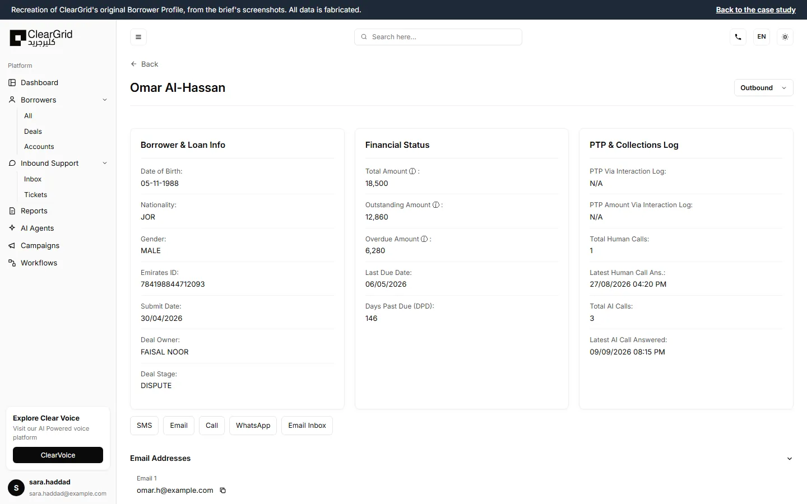
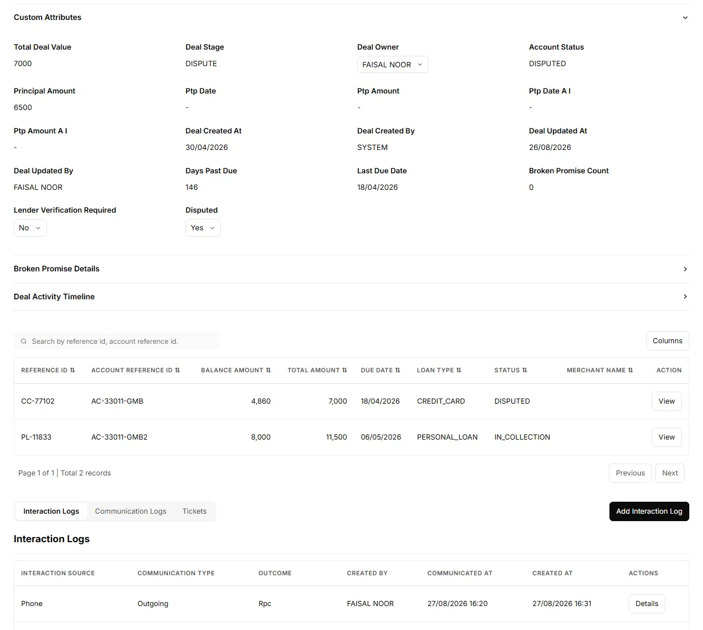
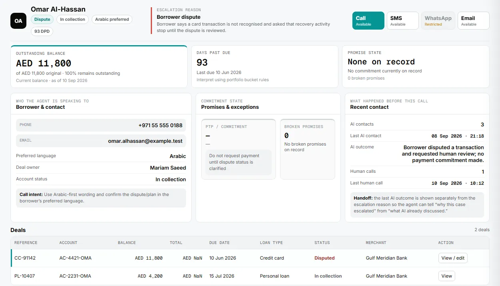
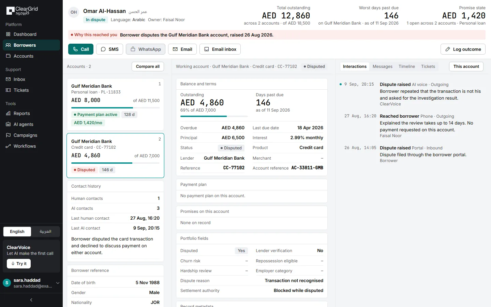
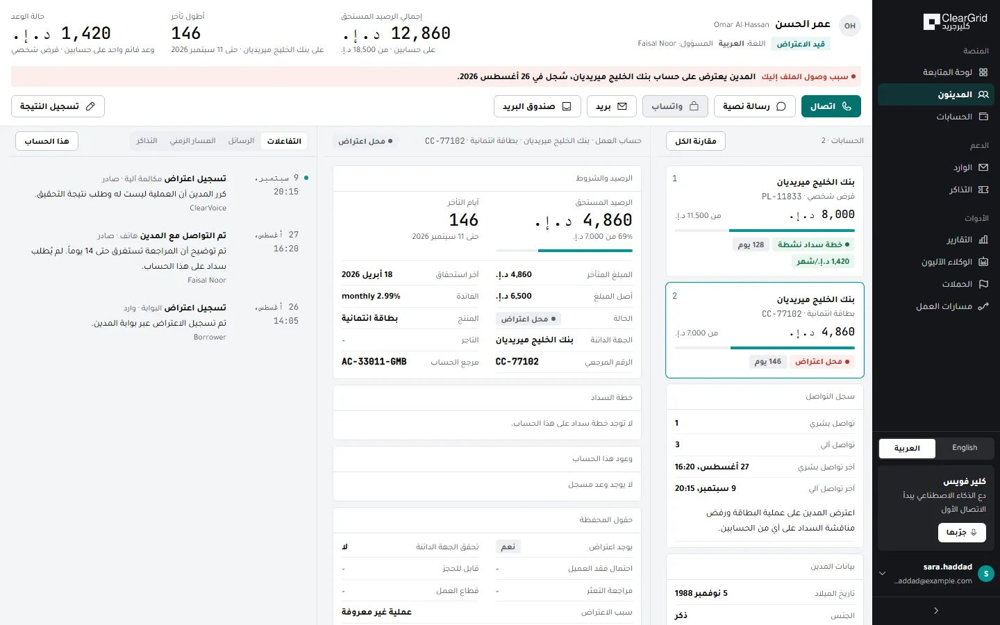
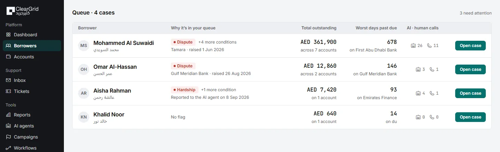
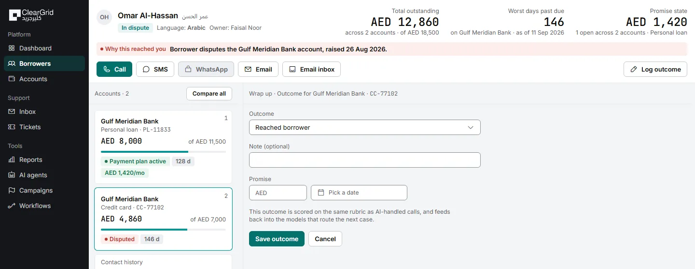

No NDA. All borrower data shown is fabricated.
Summary
- Problem. The agent's workspace mixed borrower, account and call data into one flat list, so totals on the same screen could disagree, and nothing said why a case had reached a human.
- Role. Solo. Research, information architecture, visual design and the Arabic build, with AI writing the code under my direction.
- Impact. Brief to submission in 47 hours: a working bilingual prototype, later extended into a queue → profile → wrap-up journey.
- Stack. HTML · CSS · vanilla JS · Claude Code · Figma
The brief
ClearGrid isn't a typical SaaS company. They get paid on debt actually recovered, and by their own account about 95% of cases are resolved by AI voice calls alone. The other 5% escalate to a human agent, and the Borrower Profile is that agent's workspace.
The brief asked for a redesign of that page, desktop only, in English (LTR) and Arabic (RTL), within 48 hours. It named five issues with the live page:
- Visual hierarchy. No clear line between primary and secondary data; inconsistent sizes and weights.
- Data grouping. Contact details, financial status and interaction history scattered across disconnected sections.
- Layout efficiency. Too much scrolling to reach key information, and poor use of the screen.
- Component scalability. No modular, reusable components to keep the platform consistent as it grows.
- Bilingual support. Little consideration for Arabic and right-to-left layouts.
Every redesign had to carry six groups of data: borrower and loan details, financial status, promises and call logs, a multi-deal table, expanded account details, and five contact actions. The deliverables were a Figma file, English and Arabic layouts, and a short UX rationale. It was scored on four criteria:
- 30%
UX thinking: hierarchy, grouping and layout decisions.
- 25%
Visual design clarity, aligned with ClearGrid's brand.
- 25%
Arabic support and proper right-to-left execution.
- 20%
Initiative and ownership: thoughtful touches beyond the ask.
The page agents had
The brief came with four screenshots of the live page. I've rebuilt it here with the same layout and labels, filled with the fabricated borrower used throughout this case study, so nothing from the real screenshots is published.

What the live page gave an agent, mid-call:
- Nothing stands out. 39 fields at the same size and weight.
- Brief data behind arrows. Five collapsible sections, four closed by default, holding fields the brief required.
- No reason on the page. Nothing says why the AI handed this case to a human.
- AI activity as bare counts. "3 AI calls" and a timestamp, with nothing about what those calls established.
- Fields shown twice. Seven, including deal stage, owner and days past due.
- Raw system values. IN_COLLECTION, Rpc, and three different symbols for empty.
- Empty space. Empty sections took about 40% of the screen.

Open the original layout (recreated) (opens in a new tab) to scroll and click through it yourself.
The problem
Under the five issues the brief named sat one structural cause. The page mixed three different things into one flat list: facts about the borrower, facts about one account, facts about one call. That's why the header total and the deal-table total could disagree on the same screen. One early prototype reproduced this exact bug: the header read AED 11,800, the deal table below it summed to AED 16,000.

The fix: split the page into three columns, one per data type, under a strip of facts that never scrolls.
How I worked
48 hours doesn't leave room for slow research, so I moved fast and stayed honest about what I didn't know. Real facts came from ClearGrid's own site: their brand colors, their stated AI/human split, their public claims about how cases get routed. Where data was genuinely missing, I wrote down the assumption and moved on instead of guessing silently.
AI wrote the code. I made the calls: which layout to keep, which one to reject, when a research finding turned into an actual pixel budget. Two early passes got thrown out because they still read like database records, not something a person could use mid-call.
One more check, not just a claim: I ran the actual WCAG contrast formula against every color in the palette instead of eyeballing it, and found six color pairs that looked fine but failed AA at body-text size. Every text color was re-tuned to at least 5:1 before the final build.
The decisions that mattered
- Three columns, one per data type. Borrower, account and activity each get their own column, which fixes the exact bug that broke the old page. Every figure says what it covers.
- One line naming why the case reached a human. ClearGrid escalates on six borrower states; the old page never showed which one applied. The new top band leads with it.
- No accordions. Expand-and-reflow mid-call costs more attention than it saves. Tabs only switch between views of equal weight.
- One alert color, capped at three uses. Coral means "why this case is here" and nothing else. More colors competing for attention means none of them work.
- A real Arabic build, not a mirrored one. Checked outside examples first. Nobody mirrors a dense data screen side by side.

The RTL decision is the clearest case of catching my own bad instinct. My first idea was side-by-side English and Arabic, based on one ClearGrid screen that does it that way. I checked that against outside examples first: enterprise BI tools, government portals, Arabic-UX guidance. None of them do side-by-side for a dense data screen. Dropped the instinct, built mirrored RTL instead, with its own Arabic typeface and real Arabic plural rules. Only the borrower's name shows in both scripts, because the agent says it aloud.

What I chose not to build
Just as deliberate as what shipped: no drag-and-drop customization (breaks the positional memory agents build up), no color coded by portfolio average (needs data I don't have), no full CRM clone or supervisor dashboard around this page (scope creep past what the brief asked).
How it evolved
Wireframe, two rejected passes, then the version that shipped. The rejected passes weren't wasted: one of them is what caught the header/table bug in the act, which is what led to the fix above.
Decisions were logged as I went, and that paid off twice: the working tree reverted to old files during the original 48 hours, and both times the work came back from those hand-written changelogs in about 25 minutes. Git went in right after the second one.
Ten days after the deadline, I went back and added a queue screen (how a case arrives) and a wrap-up screen (how it closes), because the real product isn't one page. It's a loop: a human's judgment here feeds back into the AI handling the next case. The same pass tightened the type system to four sizes.


How the redesign answers the brief
- Visual hierarchy. Four text styles. Only the numbers an agent reads aloud are large.
- Data grouping. One column per scope, and one home per field.
- Layout efficiency. A locked top band; the page never scrolls, only the columns do, and nothing the brief required sits behind a click.
- Component scalability. Account cards, field rows and blocks are reused across all three screens on one token set.
- Bilingual support. A real mirrored Arabic build, not a flipped text alignment.
The English and Arabic layouts shipped as a working prototype with a written rationale; the Figma file followed, built by hand from the build.
Result
Brief to submission: 47 hours. One interactive prototype, tested against four fake borrowers, including a near-empty one, in both languages and both directions. If this continued past the interview, the first thing I'd want to know is whether the "why this reached you" line actually saves agents time on a real call.
Open the live prototype (opens in a new tab). It's built for desktop screens, 1280px and wider.
Sources: TechCrunch, Dealroom